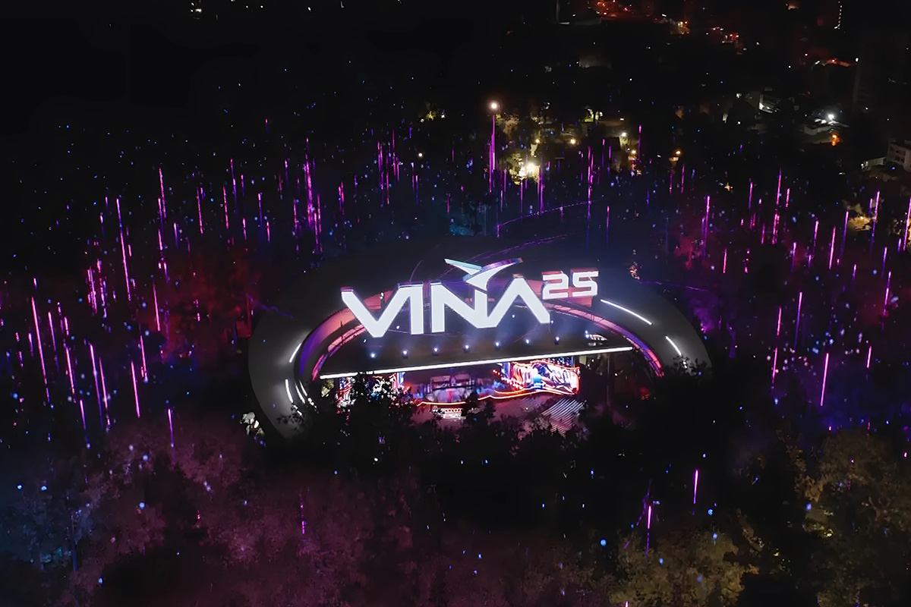
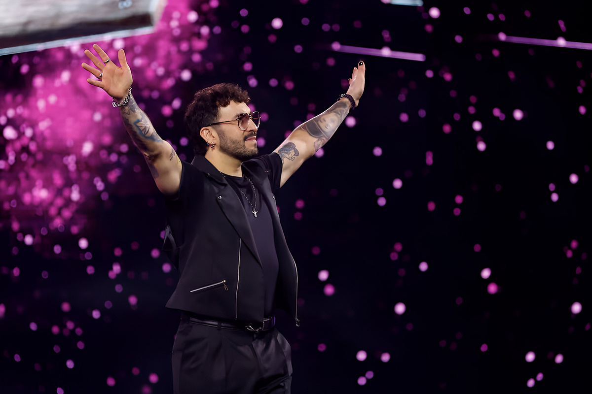

¿Sigue siendo tema el Festival de Viña?
¿O somos los millennials los que nos fuimos?
¿O somos los millennials los que nos fuimos?

Si hay algo que a los chilenos nos une en febrero, además del calor infernal y las vacaciones, es el Festival de Viña. Ya sea para disfrutarlo o criticarlo.
Por décadas este evento ha sido el “rey” de la música en Latinoamérica; un sueño para los artistas y, para nosotros, la oportunidad de verlos en vivo. Pero hace años que su popularidad ha tambaleado más que un artista desafinado frente al “monstruo” de la Quinta y que ciertos humoristas que no lograron hacernos reír (prefiero ahorrarme los nombres). Entonces, ¿qué pasó? ¿Por qué el festival que nos tenía pegados a la tele con picoteo y todo, ahora genera más discusión que emoción? Vamos por partes.
En sus buenos tiempos, Viña era lo más grande que le podía pasar a un artista en Latinoamérica. Si lograbas que el público no te pifiara y además te llevabas una Gaviota, tenías la carrera prácticamente asegurada. Luis Miguel, Soda Stereo, Chayanne y más recientemente Karol G, han dejado la patá.
Además, recordemos los momentos inolvidables: Ricky Martin desatando la locura en 1993, Gustavo Cerati emocionando a todos en 2007 y Enrique Iglesias tirando su Gaviota al público en los 2000, generando un debate sobre si los precios realmente valían tanto o si los artistas sólo los querían para la foto.
Y bueno, no nos olvidemos del poder del “Monstruo”. Si el público te quería, te llenaba de premios y aplausos (sí, recordamos también el aplausómetro). Si no, podías terminar devorado y prácticamente huyendo del escenario. Era el único festival donde la gente tenía más poder que el propio jurado.

La Caída: Streaming, redes sociales y falta de identidadPero en los últimos años, Viña ya no es lo mismo. Para empezar, la forma en que consumimos música cambió. Si antes ver a tu artista favorito en la tele era un lujo, ahora con Spotify, YouTube e incluso TikTok es posible ver e interactuar con las celebridades cuando quieras y como quieras. Seamos honestos: Viña pasó de ser el “evento del año” a competir con miles de otros contenidos de internet. Le duela a quien le duela.Además, la identidad del festival se ha desvanecido notoriamente. Hoy muchos sienten que es una especie de Lollapalooza mal programado, donde el género urbano domina y la variedad brilla por su ausencia. ¿Está mal? No necesariamente. ¿A todos les gusta? Definitivamente no.El Festival en medio de los incendios de 2024Y como si la cosa no estuviera difícil, el Festival de Viña del año pasado se vio marcado por una tragedia que remeció a todo el país: los incendios forestales. Mientras Viña del Mar ardía y cientos de familias lo perdían todo, el festival siguió adelante.A pesar de que algunos de los artistas que se presentaron prometieron ayudar a los afectados y la alcaldesa Ripamonti exigía una Ley de Incendios en plena transmisión, la decisión de continuar el show generó una ola de críticas. ¿Era realmente necesario en medio de la crisis? Para muchos, la imagen de rostros televisivos y artistas celebrando mientras la gente sufría a cuadras de la Quinta Vergara quizá haya sido el golpe final a la credibilidad del evento.Obviamente, el debate se encendió en redes sociales. Mientras unos defendieron la continuidad del festival como una forma de llevar alegría en tiempos difíciles, otros lo vieron como una muestra de desconexión total con la realidad. Ahora, lo cierto es que después de esto, la relación entre el Festival de Viña y el público quedó dañada.
¿Viña tiene futuro o es un dinosaurio en extinción?Entonces, ¿qué le espera al Festival de Viña? A pesar de todos los problemas, sigue siendo un evento con impacto mediático y comercial. Las marcas lo apoyan y los artistas lo ven como una plataforma importante, aunque ya no con el peso de antes. Por eso, en este próximo festival los organizadores han intentado modernizarlo con mayor interacción digital y redes sociales. El gran desafío sigue siendo recuperar la conexión con el público.Es un hecho que Viña necesita reinventarse, pero sin perder su esencia. ¿Cómo hacerlo? Tal vez dándole más espacio a artistas emergentes, diversificando los géneros musicales y, sobre todo, entendiendo que la audiencia ya no es la misma de hace 20 años. La Quinta Vergara aún puede seguir escribiendo historia, pero solo el tiempo dirá si podrá recuperar su lugar en el corazón de los chilenos o si terminará siendo un bonito recuerdo del pasado.Y tú, ¿has visto el festival este año?
 Cultura
CulturaSé que suena raro hablar de calor extremo mientras en Chile todos están buscando la parka más gruesa del clóset.
 Cultura
CulturaEl hecho de que estemos entrando al mes de julio no se puede creer. Pero lo que tampoco se puede creer es la cantidad de artistas que han…
 Cultura
CulturaCuando hablamos de trabajos clásicos de la música chilena, siempre se nombran los discos de Violeta Parra, Víctor Jara, Los Jaivas o…